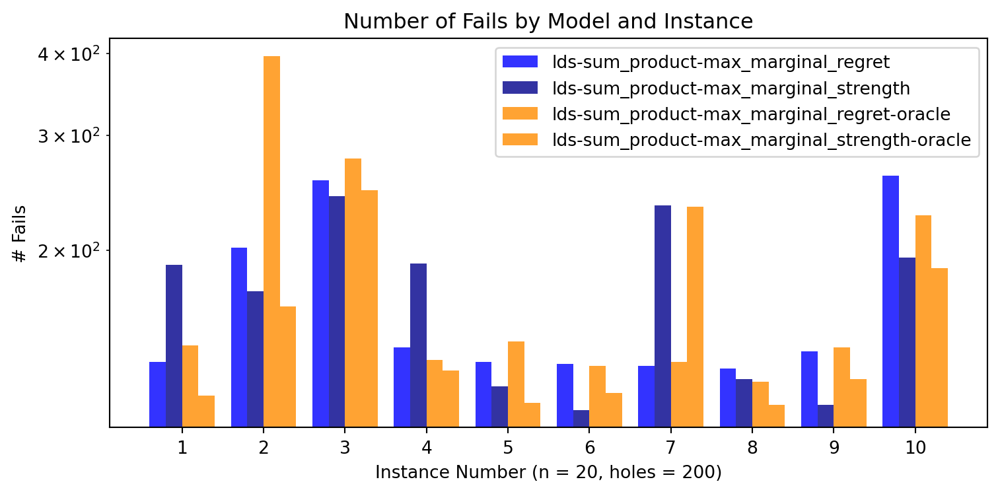
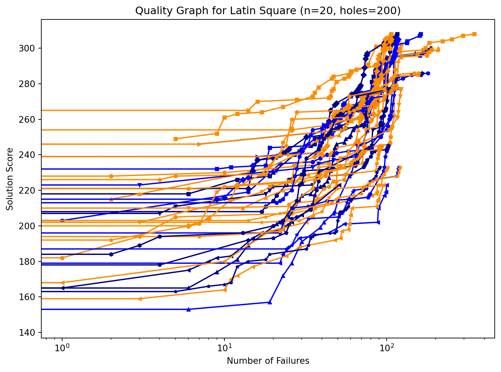
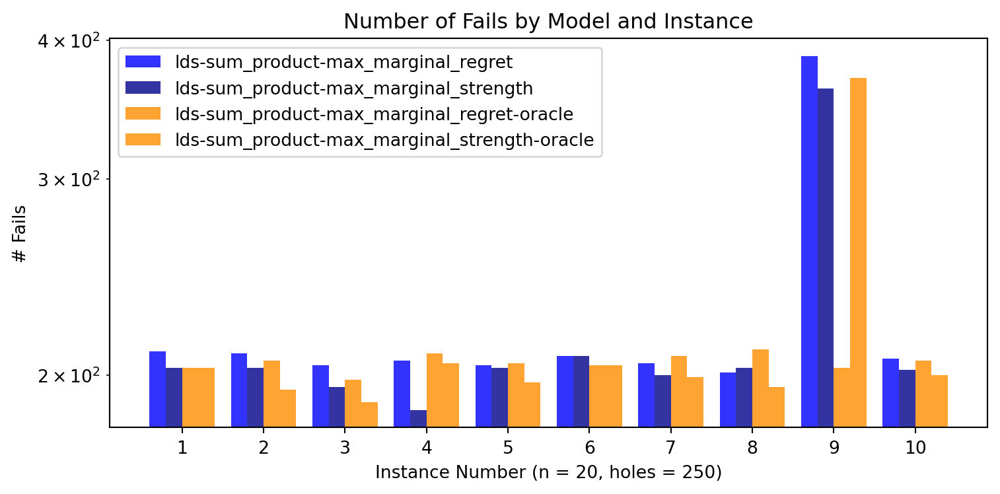
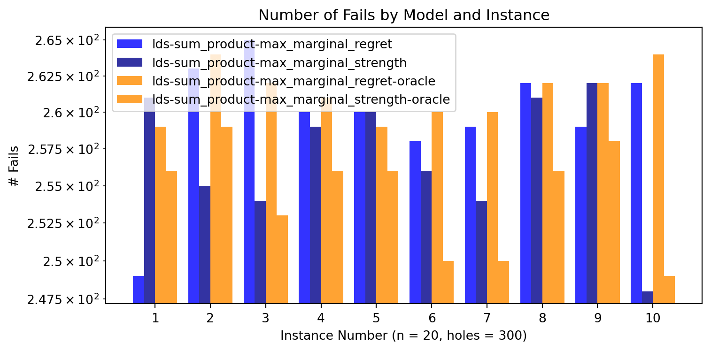

Code
import plot
instance_numbers = range(1, 11)
models = [
'lds-sum_product-max_marginal_regret',
'lds-sum_product-max_marginal_strength',
'lds-sum_product-max_marginal_regret-oracle',
'lds-sum_product-max_marginal_strength-oracle',
]Latin Square are turned into a COP as we try to maximize the sum of the diagonal.
Different models and branching schemes are compared on the same instances.
import plot
instance_numbers = range(1, 11)
models = [
'lds-sum_product-max_marginal_regret',
'lds-sum_product-max_marginal_strength',
'lds-sum_product-max_marginal_regret-oracle',
'lds-sum_product-max_marginal_strength-oracle',
]Same metrics on every graph, the slowest models are removed to change scale and make the graph more readable.
plot.hole_tables(n=20, holes=200, models=models, instance_numbers=instance_numbers)
plot.fail_graph(n=20, holes=200, models=models, instance_numbers=instance_numbers)
plot.quality_graph(n=20, holes=200, models=models, instance_numbers=instance_numbers)### Lds, Sum Product, Max Marginal Regret
| i | fs Sc | fs #f | ls Sc | ls #f | #fail | #sols | comp. |
|----:|--------:|--------:|--------:|--------:|--------:|--------:|:--------|
| 1 | 191 | 0 | 302 | 115 | 135 | 23 | true |
| 2 | 222 | 0 | 308 | 162 | 202 | 28 | true |
| 3 | 145 | 0 | 300 | 188 | 256 | 38 | true |
| 4 | 213 | 0 | 305 | 118 | 142 | 29 | true |
| 5 | 222 | 0 | 277 | 113 | 135 | 17 | true |
| 6 | 164 | 0 | 223 | 100 | 134 | 11 | true |
| 7 | 221 | 0 | 278 | 114 | 133 | 9 | true |
| 8 | 187 | 0 | 245 | 103 | 132 | 17 | true |
| 9 | 184 | 0 | 233 | 119 | 140 | 21 | true |
| 10 | 211 | 0 | 286 | 180 | 260 | 36 | true |
### Lds, Sum Product, Max Marginal Strength
| i | fs Sc | fs #f | ls Sc | ls #f | #fail | #sols | comp. |
|----:|--------:|--------:|--------:|--------:|--------:|--------:|:--------|
| 1 | 203 | 0 | 302 | 107 | 190 | 28 | true |
| 2 | 208 | 0 | 308 | 116 | 173 | 33 | true |
| 3 | 163 | 0 | 300 | 186 | 242 | 46 | true |
| 4 | 217 | 0 | 305 | 107 | 191 | 31 | true |
| 5 | 196 | 0 | 277 | 102 | 124 | 17 | true |
| 6 | 164 | 0 | 223 | 51 | 114 | 15 | true |
| 7 | 229 | 0 | 278 | 117 | 234 | 11 | true |
| 8 | 170 | 0 | 245 | 102 | 127 | 26 | true |
| 9 | 162 | 0 | 233 | 91 | 116 | 31 | true |
| 10 | 183 | 0 | 286 | 165 | 195 | 35 | true |
### Lds, Sum Product, Max Marginal Regret, Oracle
| i | fs Sc | fs #f | ls Sc | ls #f | #fail | #sols | comp. |
|----:|--------:|--------:|--------:|--------:|--------:|--------:|:--------|
| 1 | 178 | 0 | 302 | 123 | 143 | 28 | true |
| 2 | 264 | 0 | 308 | 346 | 396 | 24 | true |
| 3 | 206 | 0 | 300 | 208 | 276 | 34 | true |
| 4 | 190 | 0 | 305 | 107 | 136 | 36 | true |
| 5 | 209 | 0 | 277 | 123 | 145 | 19 | true |
| 6 | 157 | 0 | 223 | 96 | 133 | 19 | true |
| 7 | 221 | 0 | 278 | 116 | 135 | 10 | true |
| 8 | 189 | 0 | 245 | 94 | 126 | 17 | true |
| 9 | 197 | 0 | 233 | 121 | 142 | 14 | true |
| 10 | 209 | 0 | 286 | 148 | 226 | 21 | true |
### Lds, Sum Product, Max Marginal Strength, Oracle
| i | fs Sc | fs #f | ls Sc | ls #f | #fail | #sols | comp. |
|----:|--------:|--------:|--------:|--------:|--------:|--------:|:--------|
| 1 | 224 | 0 | 302 | 101 | 120 | 22 | true |
| 2 | 249 | 5 | 308 | 107 | 164 | 22 | true |
| 3 | 194 | 0 | 300 | 191 | 247 | 33 | true |
| 4 | 240 | 0 | 305 | 98 | 131 | 20 | true |
| 5 | 200 | 0 | 277 | 91 | 117 | 18 | true |
| 6 | 155 | 0 | 223 | 88 | 121 | 11 | true |
| 7 | 229 | 0 | 278 | 116 | 233 | 9 | true |
| 8 | 185 | 0 | 245 | 91 | 116 | 21 | true |
| 9 | 200 | 0 | 233 | 102 | 127 | 17 | true |
| 10 | 220 | 0 | 286 | 158 | 188 | 20 | true |


plot.hole_tables(n=20, holes=250, models=models, instance_numbers=instance_numbers)
plot.fail_graph(n=20, holes=250, models=models, instance_numbers=instance_numbers)### Lds, Sum Product, Max Marginal Regret
| i | fs Sc | fs #f | ls Sc | ls #f | #fail | #sols | comp. |
|----:|--------:|--------:|--------:|--------:|--------:|--------:|:--------|
| 1 | 219 | 0 | 333 | 174 | 210 | 34 | true |
| 2 | 208 | 0 | 330 | 171 | 209 | 31 | true |
| 3 | 151 | 0 | 268 | 150 | 204 | 30 | true |
| 4 | 172 | 0 | 312 | 185 | 206 | 50 | true |
| 5 | 210 | 0 | 314 | 178 | 204 | 39 | true |
| 6 | 181 | 0 | 266 | 164 | 208 | 27 | true |
| 7 | 201 | 0 | 305 | 176 | 205 | 29 | true |
| 8 | 205 | 0 | 311 | 161 | 201 | 33 | true |
| 9 | 160 | 0 | 280 | 187 | 387 | 40 | true |
| 10 | 190 | 0 | 293 | 181 | 207 | 31 | true |
### Lds, Sum Product, Max Marginal Strength
| i | fs Sc | fs #f | ls Sc | ls #f | #fail | #sols | comp. |
|----:|--------:|--------:|--------:|--------:|--------:|--------:|:--------|
| 1 | 238 | 0 | 333 | 169 | 203 | 41 | true |
| 2 | 177 | 0 | 330 | 179 | 203 | 50 | true |
| 3 | 162 | 0 | 268 | 141 | 195 | 33 | true |
| 4 | 213 | 0 | 312 | 163 | 186 | 33 | true |
| 5 | 215 | 0 | 314 | 178 | 203 | 34 | true |
| 6 | 180 | 0 | 266 | 168 | 208 | 25 | true |
| 7 | 254 | 0 | 305 | 173 | 200 | 19 | true |
| 8 | 174 | 0 | 311 | 167 | 203 | 34 | true |
| 9 | 109 | 0 | 280 | 180 | 362 | 41 | true |
| 10 | 172 | 0 | 293 | 172 | 202 | 36 | true |
### Lds, Sum Product, Max Marginal Regret, Oracle
| i | fs Sc | fs #f | ls Sc | ls #f | #fail | #sols | comp. |
|----:|--------:|--------:|--------:|--------:|--------:|--------:|:--------|
| 1 | 236 | 0 | 333 | 168 | 203 | 37 | true |
| 2 | 258 | 0 | 330 | 168 | 206 | 32 | true |
| 3 | 187 | 0 | 268 | 148 | 198 | 30 | true |
| 4 | 222 | 0 | 312 | 187 | 209 | 29 | true |
| 5 | 283 | 0 | 314 | 176 | 205 | 10 | true |
| 6 | 165 | 0 | 266 | 158 | 204 | 29 | true |
| 7 | 238 | 0 | 305 | 179 | 208 | 20 | true |
| 8 | 228 | 0 | 311 | 171 | 211 | 28 | true |
| 9 | 154 | 0 | 280 | 182 | 203 | 34 | true |
| 10 | 229 | 0 | 293 | 169 | 206 | 25 | true |
### Lds, Sum Product, Max Marginal Strength, Oracle
| i | fs Sc | fs #f | ls Sc | ls #f | #fail | #sols | comp. |
|----:|--------:|--------:|--------:|--------:|--------:|--------:|:--------|
| 1 | 189 | 0 | 333 | 169 | 203 | 47 | true |
| 2 | 221 | 0 | 330 | 170 | 194 | 45 | true |
| 3 | 186 | 0 | 268 | 120 | 189 | 33 | true |
| 4 | 208 | 0 | 312 | 182 | 205 | 40 | true |
| 5 | 253 | 0 | 314 | 168 | 197 | 20 | true |
| 6 | 206 | 0 | 266 | 173 | 204 | 18 | true |
| 7 | 250 | 0 | 305 | 172 | 199 | 19 | true |
| 8 | 236 | 0 | 311 | 159 | 195 | 28 | true |
| 9 | 214 | 0 | 280 | 225 | 370 | 21 | true |
| 10 | 217 | 0 | 293 | 170 | 200 | 24 | true |

plot.hole_tables(n=20, holes=300, models=models, instance_numbers=instance_numbers)
plot.fail_graph(n=20, holes=300, models=models, instance_numbers=instance_numbers)### Lds, Sum Product, Max Marginal Regret
| i | fs Sc | fs #f | ls Sc | ls #f | #fail | #sols | comp. |
|----:|--------:|--------:|--------:|--------:|--------:|--------:|:--------|
| 1 | 215 | 0 | 357 | 217 | 249 | 37 | true |
| 2 | 202 | 0 | 325 | 212 | 263 | 41 | true |
| 3 | 234 | 0 | 331 | 236 | 265 | 25 | true |
| 4 | 136 | 0 | 345 | 236 | 260 | 43 | true |
| 5 | 226 | 0 | 325 | 231 | 260 | 30 | true |
| 6 | 206 | 0 | 327 | 199 | 258 | 26 | true |
| 7 | 219 | 0 | 322 | 235 | 259 | 34 | true |
| 8 | 184 | 0 | 305 | 235 | 262 | 41 | true |
| 9 | 168 | 0 | 265 | 230 | 259 | 26 | true |
| 10 | 210 | 0 | 330 | 211 | 262 | 45 | true |
### Lds, Sum Product, Max Marginal Strength
| i | fs Sc | fs #f | ls Sc | ls #f | #fail | #sols | comp. |
|----:|--------:|--------:|--------:|--------:|--------:|--------:|:--------|
| 1 | 258 | 0 | 357 | 226 | 261 | 40 | true |
| 2 | 214 | 0 | 325 | 205 | 255 | 30 | true |
| 3 | 135 | 0 | 331 | 226 | 254 | 41 | true |
| 4 | 202 | 0 | 345 | 235 | 259 | 35 | true |
| 5 | 205 | 0 | 325 | 221 | 260 | 26 | true |
| 6 | 164 | 0 | 327 | 218 | 256 | 36 | true |
| 7 | 194 | 0 | 322 | 229 | 254 | 37 | true |
| 8 | 179 | 0 | 305 | 233 | 261 | 31 | true |
| 9 | 101 | 0 | 265 | 234 | 262 | 44 | true |
| 10 | 181 | 0 | 330 | 191 | 248 | 47 | true |
### Lds, Sum Product, Max Marginal Regret, Oracle
| i | fs Sc | fs #f | ls Sc | ls #f | #fail | #sols | comp. |
|----:|--------:|--------:|--------:|--------:|--------:|--------:|:--------|
| 1 | 208 | 0 | 357 | 229 | 259 | 45 | true |
| 2 | 228 | 0 | 325 | 210 | 264 | 30 | true |
| 3 | 252 | 0 | 331 | 211 | 262 | 22 | true |
| 4 | 226 | 0 | 345 | 238 | 261 | 23 | true |
| 5 | 231 | 0 | 325 | 228 | 259 | 23 | true |
| 6 | 215 | 0 | 327 | 202 | 260 | 20 | true |
| 7 | 279 | 0 | 322 | 236 | 260 | 15 | true |
| 8 | 175 | 0 | 305 | 236 | 262 | 33 | true |
| 9 | 172 | 0 | 265 | 234 | 262 | 24 | true |
| 10 | 244 | 0 | 330 | 213 | 264 | 31 | true |
### Lds, Sum Product, Max Marginal Strength, Oracle
| i | fs Sc | fs #f | ls Sc | ls #f | #fail | #sols | comp. |
|----:|--------:|--------:|--------:|--------:|--------:|--------:|:--------|
| 1 | 216 | 0 | 357 | 221 | 256 | 47 | true |
| 2 | 218 | 0 | 325 | 203 | 259 | 34 | true |
| 3 | 216 | 0 | 331 | 192 | 253 | 31 | true |
| 4 | 229 | 0 | 345 | 233 | 256 | 30 | true |
| 5 | 227 | 0 | 325 | 209 | 256 | 26 | true |
| 6 | 212 | 0 | 327 | 211 | 250 | 23 | true |
| 7 | 185 | 0 | 322 | 225 | 250 | 41 | true |
| 8 | 246 | 0 | 305 | 231 | 256 | 21 | true |
| 9 | 198 | 0 | 265 | 230 | 258 | 23 | true |
| 10 | 251 | 0 | 330 | 200 | 249 | 29 | true |
